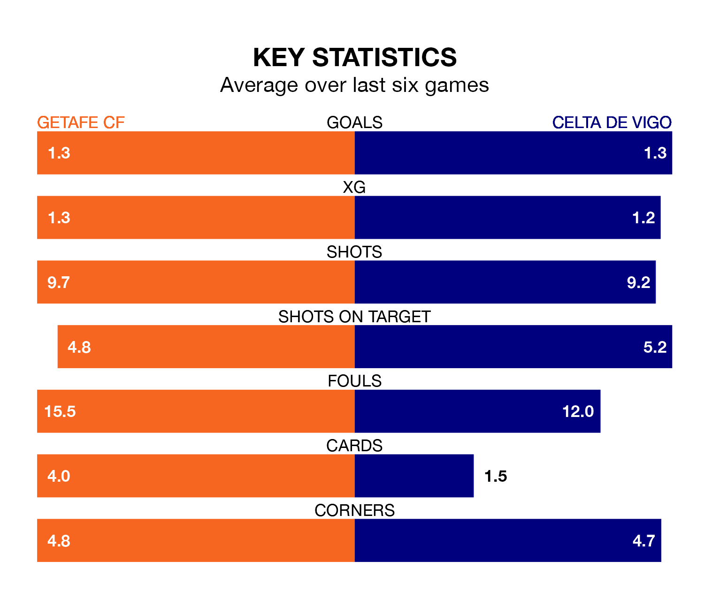

Getafe CF host Celta de Vigo on Sunday at Coliseum Alfonso Pérez in La Liga.
In their last league match, on February 4, Getafe drew with Real Betis 1-1 away, with their goal scored by Mason Greenwood.
Celta won, 3-0 away at CA Osasuna, with Anastasios Douvikas, Jørgen Strand Larsen and Luca de la Torre on the scoresheet.
In Borja Mayoral, Getafe have the league's most on-form striker so far this season. He has notched 14 goals in 23 appearances.
His goal rate of one every 130 minutes is quicker than that of Strand Larsen, Celta's top scorer with a goal every 229 minutes, and a total of eight goals in 23 games.
In the last 10 years, Getafe and Celta have played each other on 18 occasions. Getafe won six of them, Celta four, and they drew eight times.
On average, Getafe scored 1.1 goals and Celta 0.9 in those matches.
Their last meeting was on October 8, when they played out a 2-2 draw.
With 24 goals in 23 games so far this season, the visitors are scoring at below the league average rate with 1.0 goals per game. And they are conceding more than average, letting in 32 goals at a rate of 1.4 per game.
The home side, meanwhile, are average scorers, with 1.3 goals per game. They have also conceded 1.3 goals per game.
Getafe are in disappointing form in La Liga, with one win and two draws from their last six games.
With two wins and a draw over that period, Celta's form is slightly better – they have taken seven points from 18, compared to Getafe's five.
Celta are 15th in the table after 23 games, of which they have won four and drawn eight, earning 20 points.
The hosts are five places ahead of the away team in 10th, with seven wins and nine draws putting them on 30 points.
Updated: 11:47 (UTC), 05/02/24